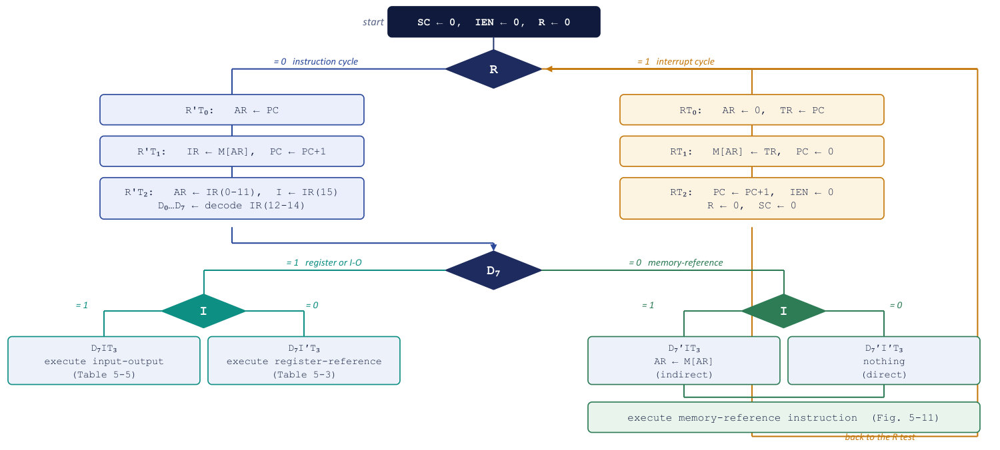
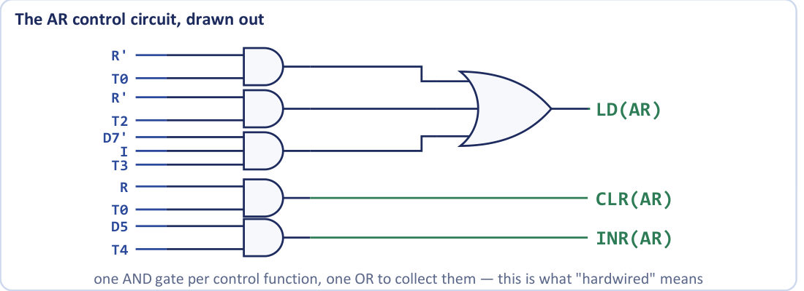
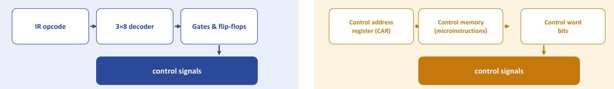
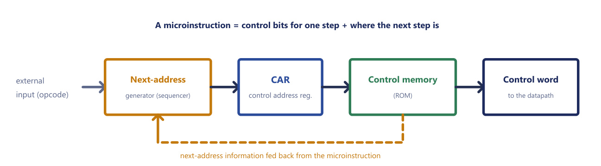

Chapter 12: The Complete Computer and Control Unit Design¶
The whole basic computer on one page, how its control signals are derived from that page, and the two ways of building the part that gives the orders
By now every part of the basic computer has been described separately. We know its memory of 4096 words of 16 bits, its registers, the common bus that connects them, the three classes of instruction and the sequence of timing steps that executes them. Each earlier chapter showed what the machine does. This chapter asks the question an engineer would ask next: given all of that, how do we actually build it? The answer turns out to be pleasantly mechanical. If the register-transfer description of the machine is written down completely and correctly, the circuits that control it can be read off from that description almost line by line.
We start by assembling everything into one picture and one table: the complete flowchart of computer operation and a single list of every control condition with the microoperations it triggers. Then we list the hardware components that implement it, derive the Boolean expressions for the control inputs of the registers, and answer an old question from the chapter on the common bus: where do the selection bits \(S_2S_1S_0\) come from? Finally we step back and compare two philosophies for the control unit: a fixed network of gates, which is hardwired, and a small memory of control words, which is microprogrammed. That comparison is the root of the later divide between RISC and CISC processors.
What you will learn
- Describe the complete basic computer from the flowchart and from the table of control functions and microoperations.
- List the seven kinds of component from which the machine is built and the five groups of signals the control logic must produce.
- Derive the LD, INR and CLR inputs of any register, and the memory read and write inputs, by scanning the control table.
- Derive the bus-source variables \(x_1 \ldots x_7\) and the selection equations for \(S_2S_1S_0\).
- Explain the structure of a microprogrammed control unit and the fields of the 20-bit microinstruction.
- Distinguish microoperation, microinstruction and microprogram, and compare hardwired and microprogrammed control.
12.1 The whole machine on one page¶
The flowchart of computer operation¶
Figure 12.1 is the picture to carry in your head. It is the complete flowchart for the operation of the basic computer, and every statement in it is a microoperation we have already met.

In the figure, the labels "Table 5-3", "Table 5-5" and "Fig. 5-11" refer to the numbering of the course text; here they correspond to Table 12.1 of this chapter (register-reference and input-output) and to the memory-reference instructions.
The chart is read from the top. At start the sequence counter, the interrupt-enable flip-flop and the interrupt flip-flop are cleared: \(SC \leftarrow 0\), \(IEN \leftarrow 0\), \(R \leftarrow 0\). The first decision is on \(R\).
- \(R = 0\): the instruction cycle (left half). The three steps \(R'T_0\), \(R'T_1\), \(R'T_2\) fetch the instruction, increment PC, copy the address bits into AR, copy the mode bit into \(I\), and decode the opcode. The next decision is on \(D_7\), which is 1 for opcode
111. If \(D_7 = 0\) the instruction is a memory-reference instruction: at \(T_3\) the hardware performs the indirect step \(AR \leftarrow M[AR]\) if \(I = 1\) and nothing if \(I = 0\), and then the memory-reference instruction itself executes. If \(D_7 = 1\) the instruction is register-reference (\(I = 0\)) or input-output (\(I = 1\)) and is executed at \(T_3\). - \(R = 1\): the interrupt cycle (right half). The three steps \(RT_0\), \(RT_1\), \(RT_2\) save PC in memory word 0 and branch to word 1, clearing \(IEN\), \(R\) and \(SC\).
Every execute path finishes with \(SC \leftarrow 0\), and control returns to the \(R\) test at the top. The left half is the normal instruction cycle and the right half is the interrupt cycle. The flowchart is therefore a complete description of the machine at the register-transfer level: there is nothing it does that is not on this page.
Every control function in one table¶
The same information, in the algebraic form that the hardware design needs, is collected in Table 12.1. If you can reproduce this table, you can describe the entire basic computer. Each line is a control function, a Boolean condition, on the left of a colon, and the microoperations that it triggers on the right.
FETCH R'T0: AR ← PC
R'T1: IR ← M[AR], PC ← PC + 1
DECODE R'T2: D0 ... D7 ← decode IR(12-14), AR ← IR(0-11), I ← IR(15)
INDIRECT D7'IT3: AR ← M[AR]
INTERRUPT T0'T1'T2'(IEN)(FGI + FGO): R ← 1
RT0: AR ← 0, TR ← PC
RT1: M[AR] ← TR, PC ← 0
RT2: PC ← PC + 1, IEN ← 0, R ← 0, SC ← 0
MEMORY-REFERENCE
AND D0T4: DR ← M[AR]
D0T5: AC ← AC ∧ DR, SC ← 0
ADD D1T4: DR ← M[AR]
D1T5: AC ← AC + DR, E ← Cout, SC ← 0
LDA D2T4: DR ← M[AR]
D2T5: AC ← DR, SC ← 0
STA D3T4: M[AR] ← AC, SC ← 0
BUN D4T4: PC ← AR, SC ← 0
BSA D5T4: M[AR] ← PC, AR ← AR + 1
D5T5: PC ← AR, SC ← 0
ISZ D6T4: DR ← M[AR]
D6T5: DR ← DR + 1
D6T6: M[AR] ← DR, if (DR = 0) then (PC ← PC + 1), SC ← 0
REGISTER-REFERENCE D7 I' T3 = r, IR(i) = Bi
r: SC ← 0
CLA rB11: AC ← 0
CLE rB10: E ← 0
CMA rB9: AC ← AC'
CME rB8: E ← E'
CIR rB7: AC ← shr AC, AC(15) ← E, E ← AC(0)
CIL rB6: AC ← shl AC, AC(0) ← E, E ← AC(15)
INC rB5: AC ← AC + 1
SPA rB4: if (AC(15) = 0) then (PC ← PC + 1)
SNA rB3: if (AC(15) = 1) then (PC ← PC + 1)
SZA rB2: if (AC = 0) then (PC ← PC + 1)
SZE rB1: if (E = 0) then (PC ← PC + 1)
HLT rB0: S ← 0
INPUT-OUTPUT D7 I T3 = p, IR(i) = Bi
p: SC ← 0
INP pB11: AC(0-7) ← INPR, FGI ← 0
OUT pB10: OUTR ← AC(0-7), FGO ← 0
SKI pB9: if (FGI = 1) then (PC ← PC + 1)
SKO pB8: if (FGO = 1) then (PC ← PC + 1)
ION pB7: IEN ← 1
IOF pB6: IEN ← 0
Table 12.1. Every control function and microoperation of the basic computer.
Study the layout once. The fetch and decode lines are controlled by \(R'\) and a timing signal. The indirect line, \(D_7'IT_3\), applies to memory-reference instructions only. The interrupt group holds the condition that sets \(R\) and the three steps of the interrupt cycle. Each memory-reference instruction occupies a block of lines with its own \(D_i\) and timing steps \(T_4\) to \(T_6\), ending in \(SC \leftarrow 0\). Register-reference and input-output instructions share one control function, \(r\) or \(p\), with a single bit \(B_i\) selecting each. Notice in particular how little there is: a modest list of transfers, and every control condition on the left is a product of a few of the signals \(D_i\), \(T_j\), \(I\), \(R\), \(B_i\) and the status bits.
12.2 What the hardware consists of¶
What is the basic computer built from? Nothing more exotic than components that Units 1 and 2 already covered. It consists of seven kinds of component.
- A memory unit of 4096 words of 16 bits each.
- Nine registers: AR, PC, DR, AC, IR, TR, OUTR, INPR and SC.
- Seven flip-flops: \(I\), \(S\), \(E\), \(R\), \(IEN\), \(FGI\) and \(FGO\).
- Two decoders: a 3 × 8 operation decoder (on IR bits 12 to 14) and a 4 × 16 timing decoder (on the sequence counter).
- A 16-bit common bus, a single shared path whose source is chosen by \(S_2S_1S_0\).
- Control logic gates: the network that turns Table 12.1 into wires.
- An adder and logic circuit connected to the input of AC.
The control logic gates are the only component of the seven that does not appear in the earlier chapters, and they are the subject of the rest of the chapter. They must produce five groups of signals:
- signals for the LD, INR and CLR inputs of the nine registers;
- signals for the read and write inputs of memory;
- signals to set, clear or complement the seven flip-flops;
- signals for \(S_2\), \(S_1\), \(S_0\) to select a register for the bus;
- signals to control the adder and logic circuit that feeds AC.
Example 12.1: How much storage does the basic computer contain?
Problem. Count the bits of storage in the registers, the flip-flops and the memory of the basic computer.
Working. The register widths are: AR 12, PC 12, DR 16, AC 16, IR 16, TR 16, INPR 8, OUTR 8 and SC 4 (a 4-bit counter, decoded by the 4 × 16 timing decoder into \(T_0 \ldots T_{15}\)). The registers hold \(12 + 12 + 16 + 16 + 16 + 16 + 8 + 8 + 4 = 108\) bits. There are seven one-bit flip-flops. The memory holds \(4096 \times 16 = 65\,536\) bits.
Answer. 108 register bits, 7 flip-flops and 65 536 memory bits. The control state of the entire machine is a tiny fraction of the memory it controls, which is why a fixed network of gates can control it.
RTL is more than a description
Register transfer language is useful for describing what a digital system does. But, as this chapter shows, it also specifies the logic circuits needed to build it. Write the register-transfer statements correctly and the gate design follows. This is the main point of the chapter.
12.3 Designing the control gates, one register at a time¶
You do not invent the control circuit. You scan Table 12.1 for every line that changes a given register, and OR the control conditions together. The table is the specification, and the gates are a mechanical translation of it. This is the whole method of hardwired control design, and it comes in three steps.
- Find every microoperation in the table whose right-hand side is the register concerned.
- Classify each as a load from the bus or another source (
LD), a clear to zero (CLR) or an increment (INR). - For each control input, OR together the control conditions of the lines of that kind.
Example 12.2: Control gates for the address register AR
Problem. Derive the LD, CLR and INR control inputs of the address register AR of the basic computer, and draw the circuit.
Step 1: scan Table 12.1 for every statement that changes AR.
R'T0: AR ← PC
R'T2: AR ← IR(0-11)
D7'IT3: AR ← M[AR]
RT0: AR ← 0
D5T4: AR ← AR + 1
Step 2: classify. The first three transfer a value into AR over the bus, so they need LD. The fourth clears AR, so it needs CLR. The fifth increments it, so it needs INR.
Step 3: OR the conditions together.
LD(AR) = R'T0 + R'T2 + D7'IT3
CLR(AR) = RT0
INR(AR) = D5T4
Circuit. Figure 12.2 shows the result: three AND gates feeding one 3-input OR gate into LD, one AND gate into CLR and one AND gate into INR. AR itself is a 12-bit register with LD, INR and CLR inputs and a clock.

Answer. \(LD(AR) = R'T_0 + R'T_2 + D_7'IT_3\), \(CLR(AR) = RT_0\) and \(INR(AR) = D_5T_4\): three OR-of-AND expressions read directly off the table. One AND gate per control function and one OR gate to collect them: that is what "hardwired" means.
The same scan applied to the memory gives its two control inputs. Every line of the form ← M[AR] is a read:
and every line of the form M[AR] ← is a write:
(these are the interrupt cycle, STA, BSA and the final step of ISZ). Notice that the read expression has three groups: the instruction fetch, the indirect step, and the operand fetch of AND, ADD, LDA and ISZ at \(T_4\).
Example 12.3: Control gates for the program counter
Problem. Derive \(LD(PC)\), \(CLR(PC)\) and \(INR(PC)\) from Table 12.1.
Working. Scan for every statement that changes PC.
R'T1: PC ← PC + 1 (fetch) → INR
RT1: PC ← 0 (interrupt cycle) → CLR
RT2: PC ← PC + 1 (interrupt cycle) → INR
D4T4: PC ← AR (BUN) → LD
D5T5: PC ← AR (BSA) → LD
D6T6: if (DR = 0) then PC ← PC + 1 (ISZ) → INR
rB4: if (AC(15) = 0) then PC ← PC + 1 (SPA) → INR
rB3: if (AC(15) = 1) then PC ← PC + 1 (SNA) → INR
rB2: if (AC = 0) then PC ← PC + 1 (SZA) → INR
rB1: if (E = 0) then PC ← PC + 1 (SZE) → INR
pB9: if (FGI = 1) then PC ← PC + 1 (SKI) → INR
pB8: if (FGO = 1) then PC ← PC + 1 (SKO) → INR
Taking the three kinds in turn:
LD(PC) = D4T4 + D5T5
CLR(PC) = RT1
INR(PC) = R'T1 + RT2 + D6T6·(DR = 0) + rB4·AC(15)' + rB3·AC(15)
+ rB2·(AC = 0) + rB1·E' + pB9·FGI + pB8·FGO
Answer. PC is loaded at BUN and BSA, cleared in the interrupt cycle, and incremented at fetch, at \(RT_2\) and at every skip whose condition is true. The skip conditions need status signals such as \((DR = 0)\) and \((AC = 0)\), produced by small gate networks (a NOR of all the bits of the register). Note that "every skip" really means every one: a skip instruction contributes a term made of its own control function ANDed with its own test.
Having done AR and PC, the rest follow the same pattern.
Example 12.4: The remaining registers and flip-flops
Problem. Derive the control inputs of DR, IR, TR and AC, and of the flip-flops \(IEN\) and \(SC\).
Working. In each case scan Table 12.1 for the register on the left-hand side.
- DR is loaded with
DR ← M[AR]by the operand-fetch step of AND, ADD, LDA and ISZ, and incremented by ISZ: \(LD(DR) = D_0T_4 + D_1T_4 + D_2T_4 + D_6T_4\) and \(INR(DR) = D_6T_5\). DR is never cleared. - IR is loaded only by the fetch: \(LD(IR) = R'T_1\).
- TR is loaded only in the interrupt cycle: \(LD(TR) = RT_0\).
- AC changes in several ways. It is cleared by CLA, \(CLR(AC) = rB_{11}\), and incremented by INC, \(INR(AC) = rB_5\). It is loaded through the adder and logic circuit by AND, ADD, LDA, CMA, CIR, CIL and INP:
LD(AC) = D0T5 + D1T5 + D2T5 + rB9 + rB7 + rB6 + pB11
Each of these seven sources is a different operation of the adder and logic circuit (AND, ADD, DR transfer, complement, shift right, shift left, INPR), which is why the circuit also receives control signals from the same terms. * IEN is set by ION and cleared by IOF and by the end of the interrupt cycle: set at \(pB_7\), cleared at \(pB_6 + RT_2\). * SC is cleared at the end of every instruction and of the interrupt cycle; otherwise it increments every clock pulse. It is cleared at \(RT_2\), at \(r\) and \(p\) (all register-reference and input-output instructions) and at the last step of each memory-reference instruction:
CLR(SC) = RT2 + r + p + D0T5 + D1T5 + D2T5 + D3T4 + D4T4 + D5T5 + D6T6
and \(INR(SC)\) is active whenever \(CLR(SC)\) is not.
Answer. The expressions above. Each is simply the OR of every control function in the table that wants that signal, with the work done by inspection and no insight required beyond knowing which register each statement changes.
Common mistake
Trying to derive control logic by intuition. It is pure bookkeeping: scan the table, collect the conditions, OR them. Any answer that does not name the timing steps is guessing. Also remember that the OR gate only collects: the sentence "LD(AR) is active during the fetch" is incomplete, whereas \(R'T_0\) is exact.
12.4 Where the Bus Selection Comes From¶
In the chapter on the common bus we saw that three selection lines, \(S_2S_1S_0\), choose which register drives the bus: 001 for AR, 010 for PC, 011 for DR, 100 for AC, 101 for IR, 110 for TR and 111 for memory. The question we left open was who sets them. Part of the answer was that the control unit does. Now we can say precisely how.
For each source on the bus we define a Boolean variable \(x_i\) that is 1 when that source must drive the bus. There are seven such variables, one per source:
| Variable | \(x_1\) | \(x_2\) | \(x_3\) | \(x_4\) | \(x_5\) | \(x_6\) | \(x_7\) |
|---|---|---|---|---|---|---|---|
| Source | AR | PC | DR | AC | IR | TR | Memory |
An encoder turns the seven request lines into the three selection inputs, as in Table 12.2.
| \(x_1\) | \(x_2\) | \(x_3\) | \(x_4\) | \(x_5\) | \(x_6\) | \(x_7\) | \(S_2\) | \(S_1\) | \(S_0\) | Register selected for the bus |
|---|---|---|---|---|---|---|---|---|---|---|
| 0 | 0 | 0 | 0 | 0 | 0 | 0 | 0 | 0 | 0 | None |
| 1 | 0 | 0 | 0 | 0 | 0 | 0 | 0 | 0 | 1 | AR |
| 0 | 1 | 0 | 0 | 0 | 0 | 0 | 0 | 1 | 0 | PC |
| 0 | 0 | 1 | 0 | 0 | 0 | 0 | 0 | 1 | 1 | DR |
| 0 | 0 | 0 | 1 | 0 | 0 | 0 | 1 | 0 | 0 | AC |
| 0 | 0 | 0 | 0 | 1 | 0 | 0 | 1 | 0 | 1 | IR |
| 0 | 0 | 0 | 0 | 0 | 1 | 0 | 1 | 1 | 0 | TR |
| 0 | 0 | 0 | 0 | 0 | 0 | 1 | 1 | 1 | 1 | Memory |
Table 12.2. The bus-selection encoder.
Reading down each output column gives the encoder equations:
It is the ordinary 8-to-3 encoder of the digital-components unit, wired to the control conditions of Table 12.1. The bus select is just an encoder, not magic: seven "I want the bus" request lines in, three selection bits out.
Each \(x_i\) is itself derived from the table by finding every line where that register is the source of a transfer over the bus. The two cases worked out in the course notes are
AR drives the bus when BUN and BSA both do PC ← AR. PC drives the bus for AR ← PC and TR ← PC (both at \(T_0\), one under \(R'\) and the other under \(R\), which together give \(T_0\)) and for M[AR] ← PC in BSA at \(D_5T_4\). The memory is the source whenever it is read, so \(x_7\) is exactly the \(Read\) expression of the previous section, and that same signal also enables the memory read input:
The remaining four follow from the same scan. DR drives the bus only to be written back by ISZ, AC only to be stored (STA) or sent to the output register (OUT), IR only for AR ← IR(0-11), and TR only for M[AR] ← TR:
(the transfer AC ← DR of LDA goes through the adder and logic circuit, not over the bus).
Only one \(x_i\) may be 1 at a time
The encoder assumes that at most one request is active. The control logic guarantees this: no two microoperations that both drive the bus are ever scheduled in the same timing step. This is exactly why an instruction needs several steps. For example, ISZ cannot read the operand and write it back in a single pulse, and BSA cannot save PC and load PC from AR in the same one: each of those uses the bus for a different purpose.
Example 12.5: Bus codes during an instruction
Problem. Give the bus source and the value of \(S_2S_1S_0\) at each of the following steps: (a) \(R'T_1\), (b) \(RT_0\), (c) \(D_3T_4\), (d) \(D_4T_4\), (e) \(R'T_2\), (f) \(RT_1\), (g) \(D_6T_6\).
Working. Find which transfer is happening at that step, then which register is the source, then read the code from Table 12.2.
| Step | Transfer using the bus | Source | \(S_2S_1S_0\) |
|---|---|---|---|
| \(R'T_1\) | IR ← M[AR] |
Memory (\(x_7\)) | 111 |
| \(RT_0\) | TR ← PC |
PC (\(x_2\)) | 010 |
| \(D_3T_4\) | M[AR] ← AC |
AC (\(x_4\)) | 100 |
| \(D_4T_4\) | PC ← AR |
AR (\(x_1\)) | 001 |
| \(R'T_2\) | AR ← IR(0-11) |
IR (\(x_5\)) | 101 |
| \(RT_1\) | M[AR] ← TR |
TR (\(x_6\)) | 110 |
| \(D_6T_6\) | M[AR] ← DR |
DR (\(x_3\)) | 011 |
Answer. As in the table. Check one case with the equations: at \(D_6T_6\) only \(x_3 = 1\), so \(S_0 = x_3 = 1\), \(S_1 = x_3 = 1\) and \(S_2 = 0\), giving 011, the code for DR.
This closes a loop. Early in the study of the bus we asked "what does \(S_2S_1S_0 = 010\) mean?" The answer is: it is the output of this encoder, driven by control conditions read straight out of Table 12.1.
Example 12.6: Every control signal active during D5T4 of BSA
Problem. List every control signal that is active at timing step \(D_5T_4\) of the branch-and-save-address instruction BSA, and give the expressions for \(LD(AR)\), \(CLR(AR)\) and \(INR(AR)\).
Working. At \(D_5T_4\) the microoperations are M[AR] ← PC and AR ← AR + 1. For the first, PC must be placed on the bus, so \(x_2 = 1\) and \(S_2S_1S_0 = 010\), and the memory is written at the address in AR, so \(Write = 1\) (the term \(D_5T_4\) of the write expression). For the second, the increment input of AR is asserted: \(INR(AR) = D_5T_4 = 1\). No LD signal is active, because nothing is loaded into a register from the bus at this step.
Answer. \(S_2S_1S_0 = 010\), memory write enabled, \(INR(AR) = 1\), and no LD signals. The expressions for AR are those of Example 12.2.
12.5 Hardwired control¶
The design just completed is called a hardwired control unit. The control logic is built as a fixed network of decoders, gates and flip-flops: the opcode in IR is decoded by the 3 × 8 decoder, the sequence counter by the 4 × 16 decoder, and the resulting \(D_i\) and \(T_j\) signals, together with \(I\), \(R\) and the status bits, feed the gates whose outputs are the control signals (Figure 12.3, left). The control logic is "wired in".
The consequences follow directly. Because the signals come straight out of gates, with no memory to read in between, a hardwired unit is as fast as the technology allows. But the expressions we derived are physical gates. To change \(LD(AR)\), you must change the circuit. Adding an instruction to the instruction set means new terms, new gates and a new layout: this is exactly the rigidity that microprogrammed control was invented to escape.
12.6 Microprogrammed control¶
The recipe card¶
A hardwired control unit is a chef who has memorised one restaurant's menu so thoroughly that every dish is pure reflex: blazingly fast, but re-training for a new menu means re-growing the reflexes. A microprogrammed control unit is a chef who cooks from recipe cards in a binder. That chef is a touch slower, because there is a glance at the card for each step, but adding a new dish is just slipping in a new card. The trade of speed of reflex against ease of change is the whole hardwired-versus-microprogrammed debate in one image.
In a microprogrammed control unit the control signals for each clock pulse are not produced by gates. They are read out of a memory, called the control memory, as a control word, also called a microinstruction. Each word of control memory specifies the control signals for one step and how to find the next step. Figure 12.3 contrasts the two designs.

Inside a microprogrammed unit¶
Figure 12.4 shows the essential parts of a microprogrammed control unit.

- The control address register (CAR) holds the address of the next microinstruction to be read.
- The control memory (usually a ROM) contains the microinstructions. The word addressed by CAR is read out as the control word.
- The control word is a set of bits that drive the control lines of the datapath directly: register loads, bus selections, memory read and write, adder and logic operations.
- The next-address generator, or sequencer, computes the new value of CAR. It does so by incrementing CAR (the normal case: go to the next word), by loading an address supplied by the microinstruction itself (a branch), or by mapping the opcode of the machine instruction in IR to the address of the routine that implements it. The "external input" in the figure is that opcode and the status bits.
So the microinstructions sequence themselves: each word contains, along with the control bits for its own step, the information from which the next address is found. A microinstruction is control bits for one step plus where the next step is.
12.7 The microinstruction, bit by bit¶
In the example design of the course text the microinstruction is 20 bits long, divided into six fields as in Figure 12.5.
| Field | Width | Meaning |
|---|---|---|
| F1, F2, F3 | 3 bits each | Three microoperation fields. Each names one microoperation (000 = none), so a single microinstruction can specify up to three microoperations at once, provided they use different hardware. |
| CD | 2 bits | Condition for branching: unconditional, the indirect bit \(I\), the sign of AC, or AC zero. |
| BR | 2 bits | Branch type: JMP, CALL, RET or MAP (map the opcode into a control-memory address). |
| AD | 7 bits | Address of the next microinstruction in control memory. |
Table 12.3. The fields of the 20-bit microinstruction.
The three microoperation fields are the do part of the word. Each field is a 3-bit code that names one microoperation from a menu of up to seven, and 000 means "no operation in this field". Putting three fields into the word means that up to three microoperations can happen in one clock pulse, such as an increment of PC at the same time as a memory read, as long as they are not competing for the same hardware (two transfers cannot both put values on the bus at once, for example). The fields are therefore organised so that microoperations that would clash are placed in the same field, and only one of them can be chosen.
The remaining three fields are the go to part. CD chooses a condition and BR chooses what kind of jump to make: in the standard coding the four conditions are always (unconditional), the indirect bit \(I\), the sign bit of AC and AC equal to zero, and the four branch types are jump, call, return and map. Roughly, JMP loads CAR with AD if the condition is true and otherwise just steps to CAR + 1. CALL and RET allow a routine of microinstructions to be shared by several instructions, as a subroutine is shared in an ordinary program. MAP is the special step that makes the machine work: at the end of the fetch routine it turns the opcode of the instruction just fetched into the starting address of the routine that executes it. Finally AD supplies the address that is loaded into CAR in the case of a jump or call.
| CD code | Condition tested | BR code | Action |
|---|---|---|---|
00 |
always 1 (unconditional) | 00 |
JMP: CAR ← AD if condition true, else CAR + 1 |
01 |
indirect bit \(I\) | 01 |
CALL: as JMP, but save the return address |
10 |
sign bit of AC | 10 |
RET: return to the saved address |
11 |
AC = 0 | 11 |
MAP: derive the address from the opcode |
Table 12.4. The standard CD and BR codes (as in the course text).
Example 12.7: Reading a control word
Problem. The 20-bit microinstruction 001 000 000 01 00 0100011 is read from the control memory. Identify the fields and say what the sequencing part does.
Working. Split the word as \(3 + 3 + 3 + 2 + 2 + 7 = 20\) bits: F1 = 001, F2 = 000, F3 = 000, CD = 01, BR = 00, AD = 0100011. F1 names one microoperation (code 1 of its menu); F2 and F3 are 000, so they request nothing. CD = 01 tests the indirect bit \(I\) and BR = 00 is a jump. AD = 0100011 = \(32 + 2 + 1\) = 35.
Answer. The word performs a single microoperation and then jumps to address 35 of the control memory if \(I = 1\); if \(I = 0\) the sequencer simply goes to the next word, CAR + 1.
Example 12.8: How big is the control memory?
Problem. With the 20-bit format, with a 7-bit address field, how many microinstructions can the control memory hold and how many bits is it? How would it change if the address field were 9 bits?
Working. The address field is 7 bits, so the control memory can have up to \(2^7 = 128\) words, each of 20 bits: \(128 \times 20 = 2560\) bits \(= 320\) bytes. With a 9-bit address field the word is \(3 + 3 + 3 + 2 + 2 + 9 = 22\) bits and the memory can hold \(2^9 = 512\) words: \(512 \times 22 = 11\,264\) bits \(= 1408\) bytes.
Answer. 128 words, 2560 bits (320 bytes) for the 20-bit format; 512 words of 22 bits, 11 264 bits (1408 bytes), for the 9-bit address field.
12.8 Microoperation, microinstruction, microprogram¶
Three words are constantly confused. They name three different levels.
| Microoperation | Microinstruction | Microprogram | |
|---|---|---|---|
| What it is | One elementary register transfer | One control word in control memory | The complete collection of microinstructions |
| Role | Executed in one clock pulse. It is a hardware action and exists in every computer, hardwired or not | Specifies a set of microoperations to perform together in one clock, plus where to go next. Exists only in a microprogrammed machine | Implements the entire instruction set, typically one routine per machine instruction. Stored in control memory |
| Example | AR ← PC |
the word whose F1 field names AR ← PC, with BR = JMP and AD = the address of the next word |
the FETCH routine, the ADD routine, the indirect-address routine |
Table 12.5. Three levels of the same idea.
A short way to remember them: microoperation = one register transfer in one clock; microinstruction = one control word specifying a set of microoperations; microprogram = all the microinstructions implementing the instruction set. A sequence of microinstructions that implements one machine instruction is a routine, and the complete set of them is the firmware.
There are two memories in a microprogrammed computer with two audiences. Main memory holds the program: machine instructions written by you, changeable at will. Control memory holds the microprogram: microinstructions written by the processor's designer, which you never see. ADD is a request; its microprogram is what the hardware tells itself in order to honour it.
Example 12.9: Three levels of one instruction
Problem. Show the three levels, microoperation, microinstruction and microprogram, for the instruction ADD.
Working. The programmer writes ADD 150, a machine instruction held in main memory. In a microprogrammed machine the opcode of that instruction is mapped by a MAP microinstruction to the start of the ADD microprogram, a short routine in control memory. The routine consists of a few microinstructions: one whose control word asserts a memory read into DR, another whose control word asserts the adder operation AC ← AC + DR, and a last one that returns to the fetch routine. Each of those control words, when it is read out, makes the datapath perform its microoperations, for example DR ← M[AR] and AC ← AC + DR, E ← Cout, in one clock pulse each.
Answer. Machine instruction ADD 150 (main memory) → ADD microprogram (control memory) → microinstructions → microoperations DR ← M[AR], AC ← AC + DR (the same transfers that Table 12.1 writes as \(D_1T_4\) and \(D_1T_5\)).
12.9 Hardwired against microprogrammed¶
The two designs solve the same problem, which is how to turn "which instruction, which timing step" into a bundle of control signals, in opposite ways. Table 12.6 summarises the trade-off.
| Aspect | Hardwired control | Microprogrammed control |
|---|---|---|
| Implementation | Fixed logic: gates, decoders, flip-flops ("random logic") | Microinstructions held in a control memory ("firmware") |
| Speed | Faster: no control-memory fetch | Slower: each step needs a control-memory read |
| Flexibility | Rigid: changing it means redesigning the circuit | Flexible: change or add instructions by editing microcode |
| Design cost | High for complex instruction sets | Lower and more systematic for complex sets |
| Chip area and cost | Economical for small, simple machines | Economical for large, complex instruction sets |
| Ease of modification | Difficult | Easy |
| Typical use | RISC processors; the basic computer | CISC processors; emulation |
Table 12.6. Hardwired versus microprogrammed control.
The last line is the historical fork. A processor with few, regular instructions that must each finish in about one cycle is best served by hardwired control: the RISC approach. A processor with many complex, irregular instructions is easier to build and to verify if each instruction is a routine of microinstructions: the CISC approach. The basic computer, with its tiny regular instruction set, is essentially a RISC in miniature.
Misconception: microprogrammed means the CPU is running software, so it must be slow and old-fashioned
Microcode is not the program you wrote. It is an internal layer that implements each machine instruction. And it is far from obsolete: modern x86 chips still crack complex instructions into micro-operations through microcode, and vendors ship microcode updates that fix CPU bugs after the silicon is already in your machine, something a purely hardwired design could never allow.
Example 12.10: Choosing a control unit for two chips
Problem. Chip A is a small embedded controller with 30 simple, regular instructions that must run as fast and cheap as possible. Chip B is a general-purpose CPU with 300 complex instructions that must remain field-upgradable after manufacture. Recommend a control style for each, with at least two reasons apiece, and explain why vendors can patch CPU bugs after sale.
Working. Chip A: hardwired. Few regular instructions mean simple, fixed logic; it is the fastest, because signals come straight from gates with no control-memory read; and it needs the least area and cost, since no control memory is needed. Chip B: microprogrammed. Many complex instructions are handled systematically, each as a microcode routine, which is easier to design and verify than a very large gate network; and microcode can be changed after manufacture, which makes the chip field-upgradable.
Answer. Chip A hardwired, Chip B microprogrammed. Microcode updates are possible only with microprogrammed control, because the behaviour of the instructions is stored as editable microinstructions in control memory; hardwired logic is fixed in silicon and cannot be updated.
Looking ahead
The common bus and the microoperations you have been writing become the datapath of a real CPU in the next unit, and the register-transfer notation is the same language used in hardware description languages. The hardwired-versus-microprogrammed choice resurfaces as the contrast between RISC and CISC.
12.10 Summary¶
Key points
- The complete flowchart has two halves: \(R = 0\) for the instruction cycle (\(R'T_0, R'T_1, R'T_2\), then execution by \(D_7\) and \(I\)) and \(R = 1\) for the interrupt cycle (\(RT_0, RT_1, RT_2\)). Every path ends with \(SC \leftarrow 0\).
- Table 12.1 lists every control function and its microoperations. If you can reproduce it, you can describe the whole machine.
- The machine is built from seven kinds of component: memory (4096 × 16), nine registers, seven flip-flops, two decoders (3 × 8 and 4 × 16), a 16-bit common bus, control logic gates and an adder and logic circuit at the input of AC.
- The control logic must produce register LD, INR and CLR signals, memory read and write, flip-flop set, clear and complement signals, bus selection signals and adder-and-logic controls.
- To derive a control input, scan the table for every line that changes the register and OR the conditions together: \(LD(AR) = R'T_0 + R'T_2 + D_7'IT_3\), \(CLR(AR) = RT_0\), \(INR(AR) = D_5T_4\), \(LD(PC) = D_4T_4 + D_5T_5\), \(CLR(PC) = RT_1\).
- \(S_2S_1S_0\) is the output of an encoder fed by \(x_1 \ldots x_7\): \(S_0 = x_1 + x_3 + x_5 + x_7\), \(S_1 = x_2 + x_3 + x_6 + x_7\), \(S_2 = x_4 + x_5 + x_6 + x_7\). Only one \(x_i\) is 1 at a time.
- Hardwired control is fast and rigid. Microprogrammed control reads control words from a control memory: it is slower, flexible, and easier for large instruction sets.
- The 20-bit microinstruction has fields F1, F2, F3 (3 bits each), CD (2), BR (2) and AD (7); the sequencing is by CAR.
- Microoperation = one register transfer in one clock; microinstruction = one control word; microprogram = all the microinstructions that implement the instruction set.
| Topic | One-line rule |
|---|---|
| Fetch | \(R'T_0\): AR ← PC; \(R'T_1\): IR ← M[AR], PC ← PC + 1; \(R'T_2\): decode, AR ← IR(0-11), I ← IR(15) |
| Indirect | \(D_7'IT_3\): AR ← M[AR] |
| Register-reference / I-O | \(D_7I'T_3 = r\) / \(D_7IT_3 = p\) |
| Control input | OR of every control function that changes the register |
| Memory read | \(R'T_1 + D_7'IT_3 + (D_0 + D_1 + D_2 + D_6)T_4\) |
| Bus select | Encoder of \(x_1 \ldots x_7\); \(x_1 = D_4T_4 + D_5T_5\), \(x_2 = T_0 + D_5T_4\) |
| Microinstruction | F1 F2 F3 (3+3+3) CD (2) BR (2) AD (7) = 20 bits |
| Hardwired | Fast, rigid, RISC |
| Microprogrammed | Slower, flexible, CISC |
Table 12.7. Summary.
12.11 Exercises¶
Exercise 12.1. A control unit whose control signals are stored as microinstructions in a control memory is called
- A. hardwired control
- B. microprogrammed control
- C. combinational control
- D. asynchronous control
Answer
B. A control memory holding microinstructions is the defining feature of microprogrammed control; hardwired control uses gates, decoders and flip-flops instead.
Exercise 12.2. True or false: in a microprogrammed control unit it is generally easier to add a new instruction than in a hardwired unit.
Answer
True. A new instruction is a new routine of microinstructions written into the control memory, whereas in a hardwired unit the gate network must be redesigned and rewired.
Exercise 12.3. Complete the sentence: the basic computer consists of a memory of _ words of bits, _ registers, flip-flops and ____ decoders.
Answer
4096 words of 16 bits, nine registers (AR, PC, DR, AC, IR, TR, OUTR, INPR, SC), seven flip-flops (I, S, E, R, IEN, FGI, FGO) and two decoders (3 × 8 and 4 × 16).
Exercise 12.4. Derive \(LD\), \(INR\) and \(CLR\) for the registers DR and IR, and \(LD\) for TR, from Table 12.1.
Answer
DR is loaded by DR ← M[AR] in AND, ADD, LDA and ISZ at \(T_4\) and incremented by ISZ at \(T_5\), and never cleared: \(LD(DR) = D_0T_4 + D_1T_4 + D_2T_4 + D_6T_4\), \(INR(DR) = D_6T_5\). IR is loaded only at the fetch: \(LD(IR) = R'T_1\). TR is loaded only at the first step of the interrupt cycle: \(LD(TR) = RT_0\).
Exercise 12.5. Write the expressions for \(LD(AR)\), \(CLR(AR)\) and \(INR(AR)\), and say which instruction is responsible for each term.
Answer
\(LD(AR) = R'T_0 + R'T_2 + D_7'IT_3\): the fetch (AR ← PC), the decode step (AR ← IR(0-11)) and the indirect step of a memory-reference instruction (AR ← M[AR]). \(CLR(AR) = RT_0\): the first step of the interrupt cycle (AR ← 0). \(INR(AR) = D_5T_4\): BSA, which increments AR after saving the return address.
Exercise 12.6. Write the Boolean expression for the memory write input, and say which instructions or cycles each term comes from.
Answer
\(Write = RT_1 + D_3T_4 + D_5T_4 + D_6T_6\). \(RT_1\): the interrupt cycle stores the return address (M[AR] ← TR); \(D_3T_4\): STA (M[AR] ← AC); \(D_5T_4\): BSA (M[AR] ← PC); \(D_6T_6\): the last step of ISZ (M[AR] ← DR).
Exercise 12.7. Give the bus source and the selection code \(S_2S_1S_0\) at the steps \(RT_1\), \(D_5T_4\) and \(D_7'IT_3\).
Answer
At \(RT_1\) the transfer M[AR] ← TR puts TR on the bus: \(x_6 = 1\), so \(S_2S_1S_0 = 110\). At \(D_5T_4\) the transfer M[AR] ← PC puts PC on the bus: \(x_2 = 1\), so 010. At \(D_7'IT_3\) the transfer AR ← M[AR] reads the memory: \(x_7 = 1\), so 111.
Exercise 12.8. Why can only one of \(x_1 \ldots x_7\) be 1 at a time, and how does the control logic guarantee it?
Answer
The bus carries one value at a time, and the encoder that produces \(S_2S_1S_0\) assumes at most one request. The control logic guarantees that no two microoperations that both drive the bus are scheduled in the same timing step. This is the reason an instruction needs several steps: for example, ISZ cannot read the operand and write it back in one pulse, since both use the bus.
Exercise 12.9. Which instructions make \(x_1 = D_4T_4 + D_5T_5\) equal to 1, and why?
Answer
BUN at \(T_4\) and BSA at \(T_5\). Both perform PC ← AR, which needs AR on the bus.
Exercise 12.10. Give four differences between hardwired and microprogrammed control, and say which suits a RISC processor.
Answer
Hardwired control is built from gates, is faster, is expensive to change and suits a small, regular instruction set. Microprogrammed control is built from a control memory, is slower because each step is a memory read, is changed by rewriting that memory, and suits a large, irregular instruction set. Further differences are design cost (high for complex sets in hardwired, lower and more systematic in microprogrammed) and typical use (RISC against CISC). A RISC processor uses hardwired control: few regular instructions and a demand for one cycle each.
Exercise 12.11. Distinguish a microoperation, a microinstruction and a microprogram, with one example of each.
Answer
A microoperation is one elementary transfer done in one clock pulse, for example AR ← PC. A microinstruction is one word of control memory, holding the control bits for one step plus the address of the next, for example the word that asserts \(LD(AR)\) and selects PC. A microprogram is the whole sequence of microinstructions implementing one machine instruction (and the complete set of them the firmware), for example the few microinstructions that carry out ADD.
Exercise 12.12. Why can a hardwired control unit not be corrected by an update after the chip is manufactured, while a microprogrammed one can?
Answer
Hardwired control is fixed combinational and sequential logic built into the silicon, so changing it means redesigning the circuit. Microprogrammed control stores its behaviour as editable microinstructions in control memory, so a microcode patch can alter instruction behaviour after manufacture.
Exercise 12.13. A microinstruction has three 4-bit microoperation fields, a 3-bit condition field, a 3-bit branch field and an 8-bit address field. (a) How many bits is the word? (b) How many words can the control memory hold? (c) What is the size of the control memory in bytes if it is full?
Answer
(a) \(3 \times 4 + 3 + 3 + 8 = 26\) bits. (b) The 8-bit address field gives \(2^8 = 256\) words. (c) \(256 \times 26 = 6656\) bits \(= 832\) bytes.
Exercise 12.14. A student writes the following for the fetch microoperations of a computer that has an interrupt system: \(T_0\): AR ← PC; \(T_1\): IR ← M[AR], PC ← PC + 1. What is wrong and how is it corrected?
Answer
Once interrupts exist, \(T_0\), \(T_1\) and \(T_2\) also drive the interrupt cycle, so fetch and interrupt would fire at the same time. The fetch must be written with the guard \(R'\): \(R'T_0\): AR ← PC; \(R'T_1\): IR ← M[AR], PC ← PC + 1; \(R'T_2\): decode, AR ← IR(0-11), I ← IR(15).
Exercise 12.15. Explain why the statement "microprogrammed control means the CPU is running software and is therefore obsolete" is a misconception.
Answer
Microcode is not the program the user wrote; it is an internal layer, held in a control memory, that implements each machine instruction. It is far from obsolete: modern processors break complex instructions into micro-operations through microcode, and manufacturers ship microcode updates to repair bugs after the silicon is in the customer's machine, which a purely hardwired design could not allow.
Exercise 12.16. Self-test (closed book). (a) List the seven kinds of component of the basic computer. (b) Derive \(LD(PC)\). (c) Give the equations for \(S_0\), \(S_1\) and \(S_2\). (d) Name the six fields of the 20-bit microinstruction and their widths.
Answer
(a) Memory of 4096 × 16; nine registers; seven flip-flops; two decoders (3 × 8 and 4 × 16); a 16-bit common bus; control logic gates; an adder and logic circuit connected to AC. (b) PC is loaded at BUN (\(D_4T_4\)) and BSA (\(D_5T_5\)): \(LD(PC) = D_4T_4 + D_5T_5\). (c) \(S_0 = x_1 + x_3 + x_5 + x_7\), \(S_1 = x_2 + x_3 + x_6 + x_7\), \(S_2 = x_4 + x_5 + x_6 + x_7\). (d) F1, F2, F3 (3 bits each), CD (2), BR (2), AD (7): 20 bits in all.